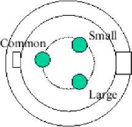

Operating Documentation
Direction 5196839-800, Rev# 6
RT16 and Xtra Service Info Adv
Operating Documentation |
| Last Revised: | June 2003 |
The cathode HV connection between the HV Transformer and the X-ray tube is made with 3-conductor, shielded, 160kV HV cable (delivered with the tube). The Generator side termination is a PMI type H454P3-160 which is be oil-filled and sealed. The resistance across the filaments is approximately 0.2 ohms.
Illustration 1: Bottom View - From Inside HV Tank

The HV cable has to carry the negative HV kV (<= -150kV) and also the filament current for the large and small focal spots directly from the HV tank to the X-ray tube.